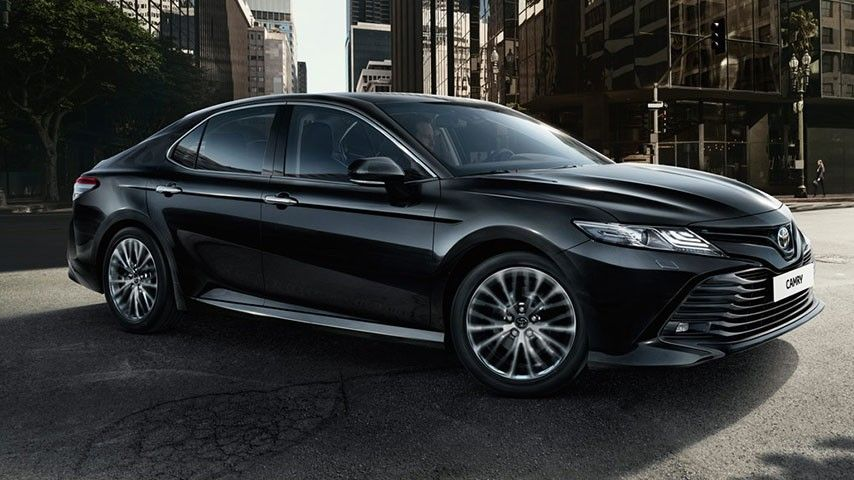
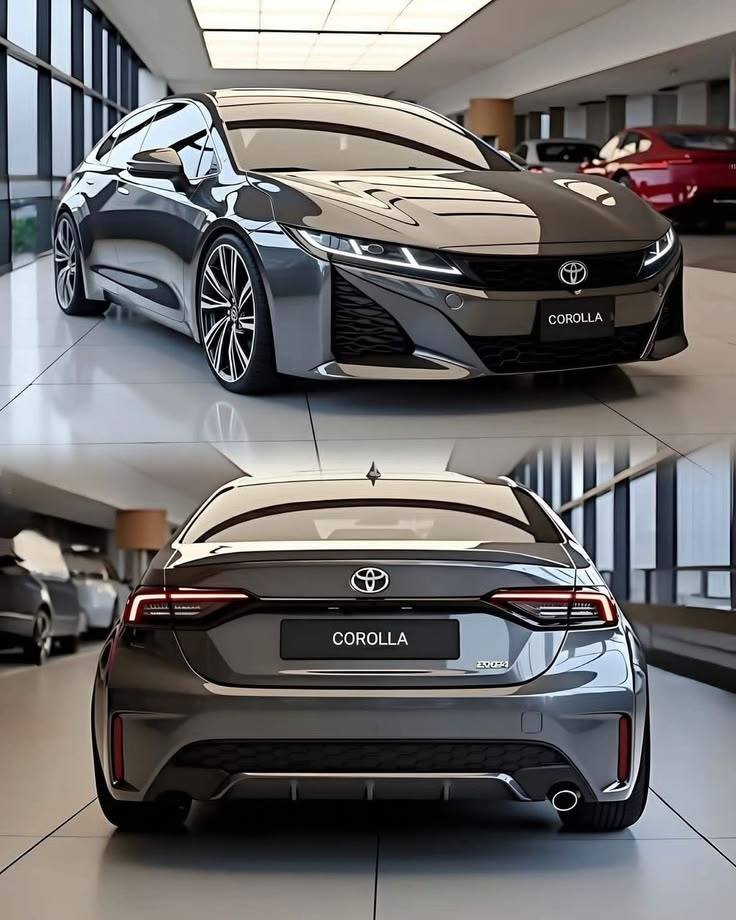
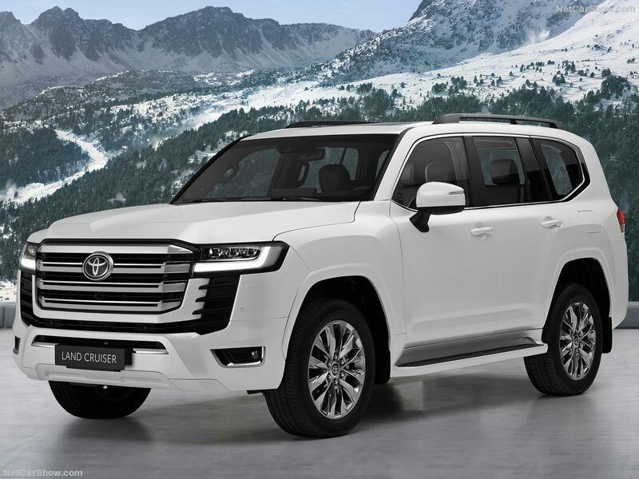

Toyota Camry — комфортный и надежный седан. Автомобиль подходит для семьи и дальних поездок.

Toyota Corolla — один из самых популярных автомобилей в мире. Машина известна своей экономичностью и долговечностью.

Toyota Land Cruiser — большой внедорожник для сложных дорог. Автомобиль отличается мощностью и надежностью.
| Модель | Тип | Особенность |
|---|---|---|
| Camry | Седан | Комфорт |
| Corolla | Седан | Экономичность |
| Land Cruiser | Внедорожник | Проходимость |